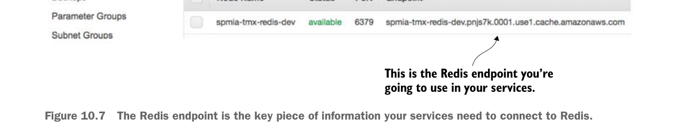

detailed screen showing the endpoint used in the cluster. Figure 10.7 shows the details of the Redis clustered after it has been created.

This is the Redis endpoint you’re going to use in your services.
The Redis endpoint is the key piece of information your services need to connect to Redis.
The licensing service is the only one of your services to use Redis, so make sure that if you deploy the code examples in this chapter to your own Amazon instance, you modify the licensing service’s Spring Cloud Config files appropriately.
10.1.3 Creating an ECS cluster
The last and final step before you deploy the EagleEye services is to set up an Amazon ECS cluster. Setting up an Amazon ECS cluster provisions the Amazon machines that are going to host your Docker containers. To do this you’re going to again go to the Amazon AWS console. From there you’re going to click on the Amazon EC2 Container Service link.
This brings you to the main EC2 Container service page, where you should see a “Getting Started” button.
Click on the “Start” button. This will bring you to the “Select options to Configure” screen shown in figure 10.8.
Uncheck the two checkboxes on the screen and click the cancel button. ECS offers a wizard for setting up an ECS container based on a set of predefined templates. You’re not going to use this wizard. Once you cancel out of the ECS set-up wizard, you should see the “Clusters” tab on the ECS home page. Figure 10.9 shows this screen. Hit the “Create Cluster” button to begin the process of creating an ECS cluster.
Now you’ll see a screen called “Create Cluster” that has three major sections. The first section is going to define the basic cluster information. Here you’re going to enter the
- Name of your ECS cluster.
- Size of the Amazon EC2 virtual machine you’re going to run the cluster in